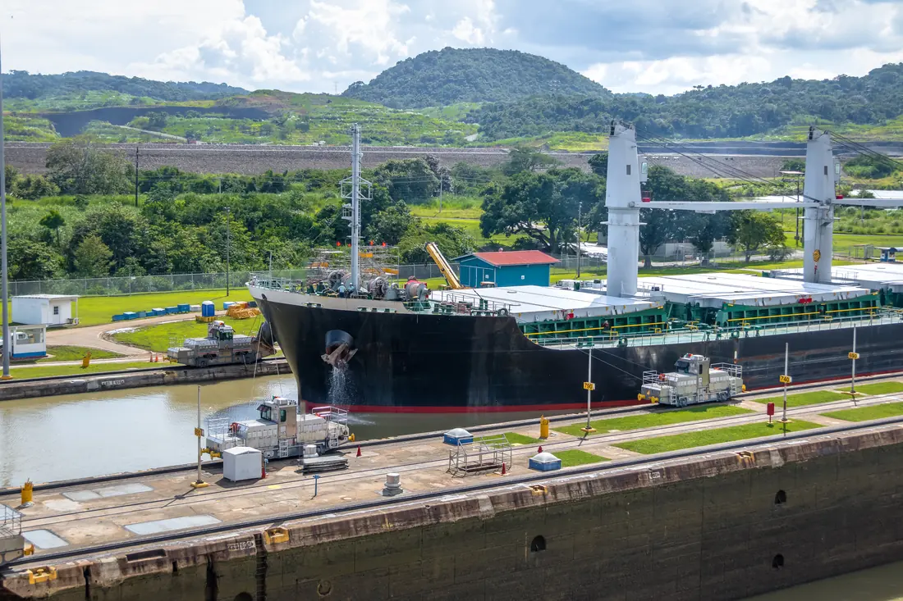

Our Services
End-to-End Maritime Support in Panama

Canal Transits
Coordinating Every Step of Your Canal Transit
A Panama Canal transit requires careful planning, accurate documentation and close coordination with multiple stakeholders. GF Maritime manages the agency requirements associated with each transit, providing owners and operators with a reliable point of contact throughout the process.
Our services include:
- Transit booking management
- Transit scheduling and coordination
- Documentation handling
- Panama Canal authority coordination
- Pilot and tug arrangements
- Operational communication and follow-up
- ETA and pre-arrival submissions
- Booking slots and auctions
- Toll and PDA estimates
- Panama Canal tonnage certificate (PC/UMS) and vessel requirement checks
- Advisory and draft monitoring

Husbandry Activities
Supporting Vessel and Crew Requirements
Our husbandry services cover the practical requirements associated with a vessel’s stay in Panama. We coordinate with crew, owners, operators and local service providers to ensure essential requirements are handled efficiently and with minimal disruption to vessel operations.
Our services include:
- Launch services
- Fresh water and provisions
- Garbage and sludge removal
- Fumigation and sanitation certificates
- Divers and hull cleaning
- Afloat repairs and drydock coordination (Astibal)
- Surveys and flag inspections
- Sealed parcels and courier
- Hospital and clinic liaison
- Cash to Master in USD
- Crew changes
- Hotel and accommodation arrangements
- Transportation
- Immigration and visa formalities
- Medical assistance
- Cash-to-master
- Spare parts logistics
- Ship supplies and related arrangements

Port Agency
Supporting Every Aspect of Your Port Call
GF Maritime provides comprehensive port agency support for vessels calling at Panamanian ports. Our team coordinates the local requirements of each port call, maintaining clear communication between the vessel, owners, operators, authorities and service providers.
Our services include:
- Port call coordination
- Arrival and departure formalities
- Husbandry coordination
- Crew-related arrangements
- Medical assistance
- Cash-to-master
- Spare parts and ship spares logistics
- Coordination with local service providers

Owners Protective Agency
Local Representation. Clear Oversight.
GF Maritime provides owners with dedicated local representation and oversight throughout their vessel’s transit or port call.
We act in the owner’s interests, maintaining close oversight of operations, service providers and costs while providing clear and timely communication to the principal.
Our services include:
- Owner representation
- Local operational supervision
- Charterer and stakeholder liaison
- Service provider coordination
- Cost control and monitoring
- Reporting and communication
- Attendance and oversight as required

Bunker Coordination
Coordinating Bunkers with Vessel Operations
GF Maritime coordinates bunker requirements alongside wider vessel operations, helping ensure that fuel arrangements are efficiently planned and integrated with the vessel’s schedule.
Our team works closely with vessels, suppliers and relevant stakeholders to coordinate bunker operations and maintain clear communication throughout the process.
Our services include:
- Vessel scheduling
- Bunker supplier coordination
- Delivery arrangements
- Operational communication
- Coordination with port and canal requirements
- Liaison between vessel, supplier and relevant stakeholders
One Point of Contact. Complete Support.
Whatever the requirement, GF Maritime coordinates with the relevant authorities, suppliers and service providers to deliver an efficient and integrated service throughout your vessel’s time in Panama.
Contact Us